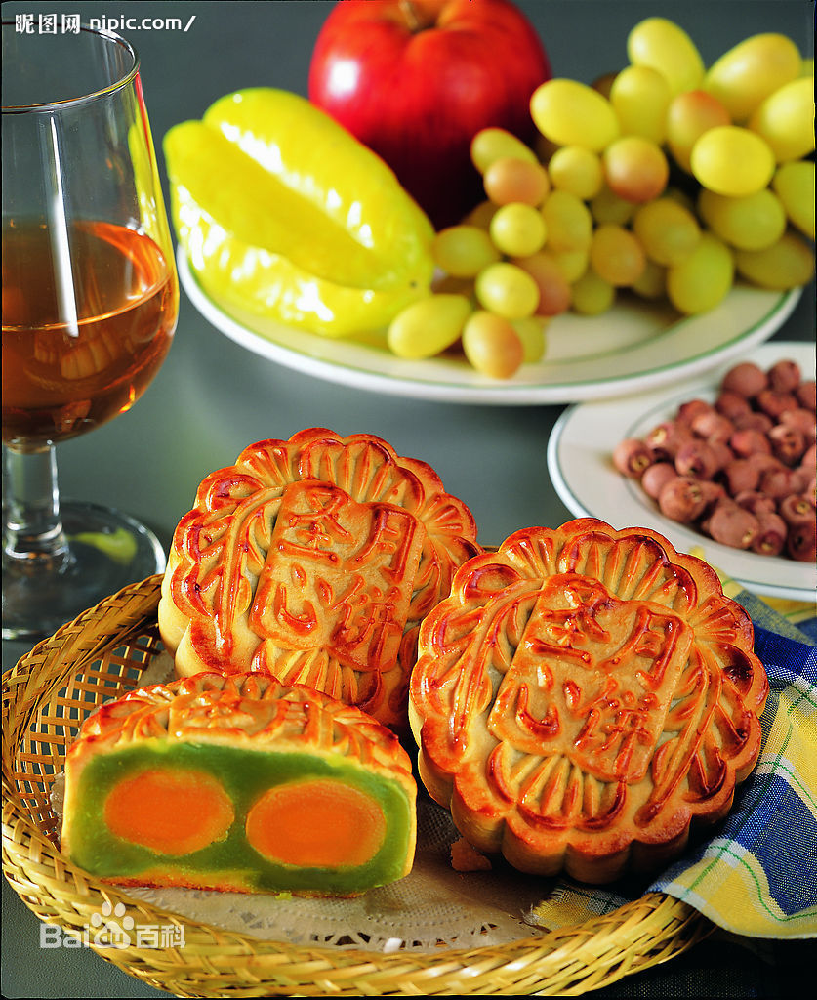

中秋节，又称月夕、秋节、仲秋节、八月节、八月会、追月节、玩月节、拜月节、女儿节或团圆节，是流行于中国众多民族与汉字文化圈诸国的传统文化节日，时在农历八月十五；因其恰值三秋之半，故名，也有些地方将中秋节定在八月十六。[1-2] 中秋节始于唐朝初年，盛行于宋朝，至明清时，已成为与春节齐名的中国主要节日之一。受中华文化的影响，中秋节也是东亚和东南亚一些国家尤其是当地的华人华侨的传统节日。自2008年起中秋节被列为国家法定节假日。2006年5月20日，国务院列入首批国家级非物质文化遗产名录。 中秋节自古便有祭月、赏月、拜月、吃月饼、赏桂花、饮桂花酒、等习俗，流传至今，经久不息。中秋节以月之圆兆人之团圆，为寄托思念故乡，思念亲人之情，祈盼丰收、幸福，成为丰富多彩、弥足珍贵的文化遗产。中秋节与端午节、春节、清明节并称为中国四大传统节日。
关于中秋节的起源，说法较多。中秋一词，最早见于《周礼》，《礼记·月令》上说：“仲秋之月养衰老，行糜
粥饮食。”
一说它起源于古代帝王的祭祀活动。《礼记》上记载：“天子春朝日，秋夕月”，夕月就是祭月亮，说明早在春秋时代，帝王就已开始祭月、拜月了。后来贵族官吏和文人学士也相继仿效，逐步传到民间。
二是中秋节的起源和农业生产有关。秋天是收获的季节。“秋”字的解释是：“庄稼成熟曰秋”。八月中秋，农作物和各种果品陆续成熟，农民为了庆祝丰收，表达喜悦的心情，就以“中秋”这天作为节日。“中秋”就是秋天中间的意思，农历的八月是秋季中间的一个月，十五日又是这个月中间的一天，所以中秋节可能是古人“秋报”遗传下来的习俗。
也有历史学家研究指出，中秋节起源应为隋末唐军于大业十三年八月十五日，唐军裴寂以圆月作为构思，成功发明月饼，并广发军中作为军饷，成功解决因大量吸收反隋义军而衍生之军粮问题。
中秋节赏月的风俗，据历史学家推断，最初是古代宫廷文人兴起，然后扩散到民间的。早在魏晋乐府《子夜四十歌》中，就有一首《秋有月》描写道：“ 仰头望明月，寄情千里光。”在唐代，中秋赏月、玩月颇为盛行，
许多诗人的名篇中都有咏月的诗句，中秋节开始成为固定的节日，《唐书·太宗记》记载就有“八月十五中秋节”。传说唐玄宗梦游月宫，得到了霓裳羽衣曲，民间才开始盛行过中秋节的习俗
北宋，正式定八月十五为中秋节，并出现“小饼如嚼月，中有酥和饴”的节令食品。孟元老《东京梦华录》说：“中秋夜，贵家结饰台榭，民间争占酒楼玩月”；而且“弦重鼎沸，近内延居民，深夜逢闻笙芋之声，宛如云外。间里儿童，连宵婚戏；夜市骈阗，至于通晓。”吴自牧《梦梁录》说：“此际金凤荐爽，玉露生凉，丹桂香飘，银蟾光满。王孙公子，富家巨室，莫不登危楼，临轩玩月，或开广榭，玳筵罗列，琴瑟铿锵，酌酒高歌，以卜竟夕之欢。至如铺席之家，亦登小小月台，安排家宴，团围子女，以酬佳节。虽陋巷贫篓之人，解农市酒，勉强迎欢，不肯虚度。此夜天街卖买，直至五鼓，玩月游人，婆婆于市，至烧不绝。”更有意思的是，《新编醉翁谈录》记述拜月之俗：“倾城人家子女不以贫富能自行至十二三，皆以成人之眼眼饰之，登楼或中庭焚香拜月，各有所朝；男则愿早步蟾宫，高攀仙桂。……女则愿貌似嫦娥，圆如皓月。”
明清两朝的赏月活动，盛行不衰。“其祭果饼必圆”；各家都要设“月光位”，在月出方向“向月供而拜”。陆启泓《北京岁华记》载：“中秋夜，人家各置月宫符象，符上免如人立；陈瓜果于庭，饼面绘月宫蟾免；男女肃拜烧香，旦而焚之。”田汝成《西湖游览志余》云：“是夕，人家有赏月之宴，或携柏湖船，沿游彻晓。苏堤之上，联袂踏歌，无异白日”；“民间以月饼相邀，取团圆之义”。富察敦崇《燕京岁时记》称：“中秋月饼，以前门致美斋者为京都第一，他处不足食也。呈供月月饼到处皆有。大者尺余，上绘月宫蜡兔之形。”“每届中秋，府第朱门皆以月饼果品相馈赠。至十五月圆时，陈瓜果于庭以供月，并祀以毛豆、鸡冠花。是时也，皓魄当空，彩云初散，传杯洗盏，儿女喧哗，真所谓佳节也。唯供月时男子多不叩拜。”同时这五百多年中还推出“烧斗香”、“走月亮”、“放天灯”、“树中秋”、“点塔灯”、“舞火龙”、“曳石”、“卖兔儿爷”等节庆活动；其中的赏月，吃月饼、团圆饭等习俗，一直流传到今天。
2008年开始中国大陆将中秋节列为法定假期，如当天与周六周日重合，则在下周一补休一天。
在台湾，中秋节当天放假一天，若与周六、日重叠则不另外补假，但若与周休假期仅相隔一工作日者，该工作日则调为假期，并择另一星期六补班补课。
香港的中秋节公众假期定在农历八月十六日（中秋节翌日）。如果碰上星期日，则在星期一补一天假；如果碰上星期六则没有补假。
韩国把中秋节列为法定假期，放假3天
在古代，浙江一带除中秋赏月外，观潮可谓是又一中秋盛事。中秋观潮的风俗由来已久，早在汉代枚乘的《七发》赋中就有了相当详尽的记述。汉以后，中秋观潮之风更盛。明朱廷焕《增补武林旧事》和宋吴自牧《梦粱录》也有观潮记载。
燃灯中秋之夜，有燃灯以助月色的风俗。如今湖广一带仍有用瓦片叠塔于塔上燃灯的节俗。江南一带则有制灯船的节俗。近代中秋燃灯之俗更盛。今人周云锦、何湘妃《闲情试说时节事》一文说：“广东张灯最盛，各家于节前十几天，就用竹条扎灯笼。做果品、鸟兽、鱼虫形及‘庆贺中秋’等字样，上糊色纸绘各种颜色。中秋夜灯内燃烛用绳系于竹竿上，高竖于瓦檐或露台上，或用小灯砌成字形或种种形状，挂于家屋高处，俗称‘树中秋’或‘竖中秋’。富贵之家所悬之灯，高可数丈，家人聚于灯下欢饮为乐，平常百姓则竖一旗杆，灯笼两个，也自取其乐。满城灯火不啻琉璃世界。”看来从古至今中秋燃灯之俗其规模似乎仅次于元宵灯节。
猜谜中秋月圆夜在公共场所挂着许多灯笼，人们都聚集在一起，猜灯笼身上写的谜语，因为是大多数年轻男女喜爱的活动，同时在这些活动上也传出爱情佳话，因此中秋猜灯谜也被衍生了一种男女相恋的形式。
吃月饼中秋节赏月赏月和吃月饼是中国各地过中秋节的必备习俗，俗话说：“八月十五月正圆，中秋月饼香又甜”。月饼一词，源于南宋吴自牧的《梦梁录》，那时仅是一种点心食品。到后来人们逐渐把赏月与月饼结合在一起，寓意家人团圆，寄托思念。同时，月饼也是中秋时节朋友间用来联络感情的重要礼物
